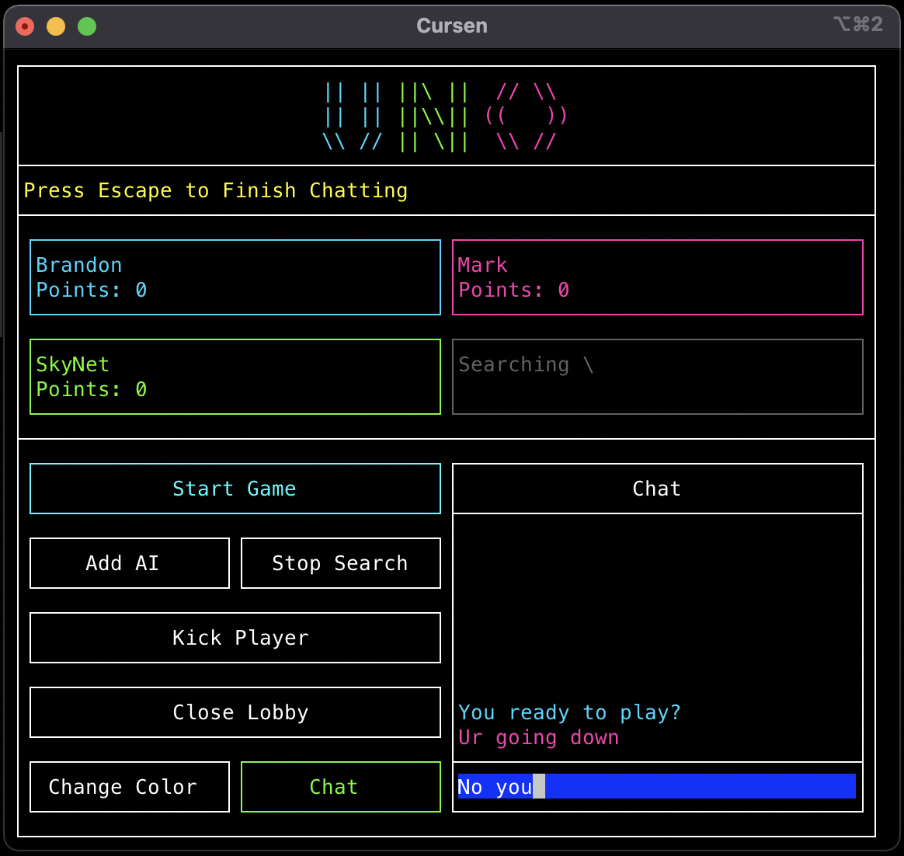
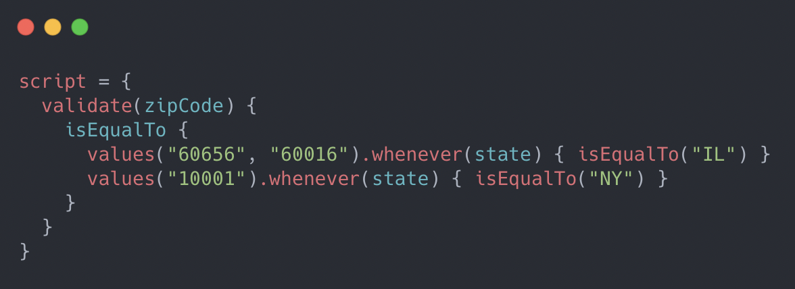
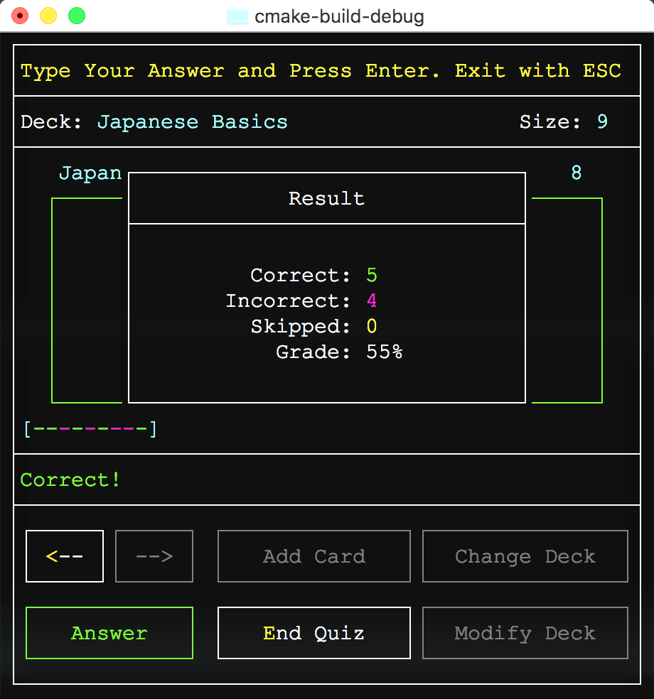
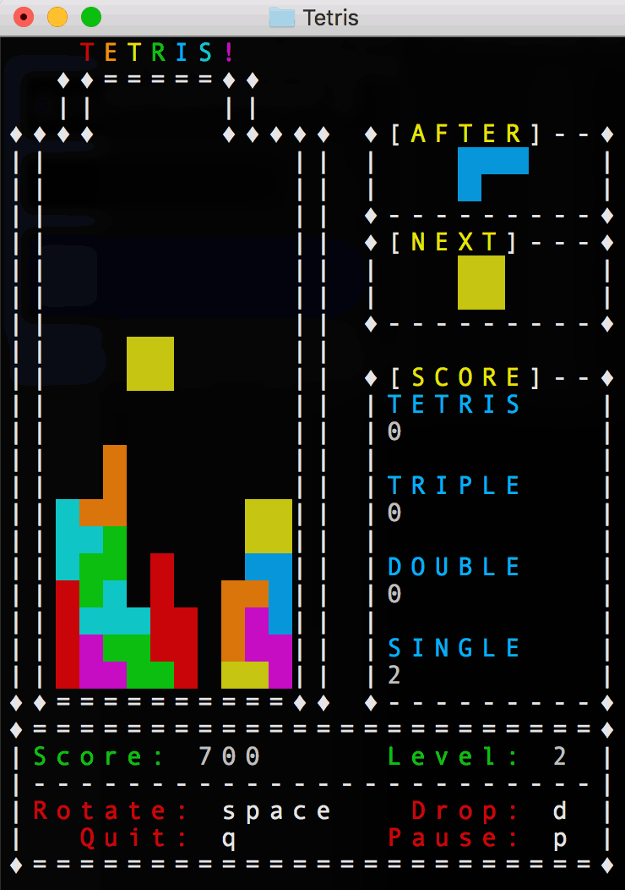

A text-based recreation of Mattel's card game with 4-player online multiplayer over sockets.
Written in C++ and built using a custom text-based game engine.
My goal with this project was to put my engine Cursen to the test by creating an actual game using it.
I also wanted to make a game with multiplayer support over sockets as well as supporting local single-player against a computer AI.
The toughest feature to implement for this project was the multiplayer support over sockets.
My strategy for distributing game state is to have one player act as the host who holds the authoritative game state and other players connect to that host.
The host player enforces the game's rules by validating that messages sent by other players are legal game actions.
Valid messages are interpreted by the host and the updated game state is broadcast to the other players.
{kind=link}
{kind=link}
I implemented my messages using a Command Pattern, where each possible message is defined as a class that can be serialized and sent over a socket. The receiver deserializes the message to the proper class using header information and runs the command. All changes to the game state get translated into messages that are forwarded to a command queue for distribution. Depending on the game mode and network role, some messages are looped back to the sender or not sent at all and just executed locally.

Prototype rules engine and domain-specific language developed at CNA to automate the generation of our business rules documentation.
Developed as a possible solution to the business problem of having to manually maintain an Excel spreadsheet with hundreds of rows documenting our code's rules.
My goal with this project was to develop a system where our team can write business rules in a CNA-specific DSL that can also be interpreted and documented at runtime.
Our documentation spreadsheet gets generated at runtime using all the written DSL rules, so it will always be in sync with the actual code.
This was my most challenging project to date as I was the only resource available to explore this solution and it required me to learn new software development skills.
A notable challenge was developing the frontend DSL that could be expressive enough handle many different validation scenarios while being intuitive to use so new developers can pick it up easily.
It was a constant tug-of-war and required repeated experimentation and feedback from peers to get right.
I ended up choosing Kotlin to create an embedded DSL using its DSL building features which made it possible to leverage our IDEs autocomplete features and type safety when writing rules.
At runtime, the DSL is translated to an in-memory AST that represents the business logic.
I used a Visitor pattern to develop an Interpreter and Documentor which would traverse the tree structure to either execute the rules on a JSON request or produce documentation.
The Interpreter would handle testing the request generating helpful error messages while the Documentor could output the logic as an Excel spreadsheet or JSON for web consumption.
{kind=link}

Text-based C++ program that allows you to create decks of flash cards and quiz yourself.
I wrote this program in 2018 after completing my first college C++ course as an exercise to further understand both C and C++.
I restricted my use of STL, strings, templates, and other advanced features so that I can also further understand the C language, just with the addition of classes.
The program uses entirely text-based graphics to represent various UI components and a virtual cursor for the user to navigate the screens.
Users can create decks of flash cards where each card has a front and back text as well as test themselves with a quiz mode that shuffles the cards.
Decks can be saved to a plain text file and loaded after the application shuts down.

{kind=link}
Manual memory management was tough when most of my prior experience was in managed languages like Java and this program needed to use a lot of strings.
To help mitigate this I looked for opportunities to use stack memory whenever I knew at compile time how much data I might need and only use heap memory for polymorphism or Linked Lists.
This was my largest text-based application at the time, with multiple screens, saved data, various visual components, user input, etc.
During this time I still lacked experience in software design patterns for user interfaces, especially for text-based ones so the code is a bit rough around the edges.
However, this experience inspired me to later create a text-based UI framework called Cursen to assist me in making future text games.

Recreation of the classic Tetris game with text-based graphics.
Created during my Junior year at DePaul University, my goals with this project was to experiment with the curses module and threading to create a text-based non turn-based game that deals with user-input concurrently with computer input.
Written in Python 3.
This project was my first attempt at making a Real-time game, as opposed to turn based games like Chess and Uno.
In order to do this, I needed a way of getting individual key presses and update the screen constantly.
I learned about the NCurses module which solved both of those problems.
Now I was able to receive input from the user without needing them to keep pressing enter and the screen wouldn't have to reprint itself in the terminal every update.
I also experimented with Python's threading module in order to make the tetris piece automatically fall when the user waits long enough.